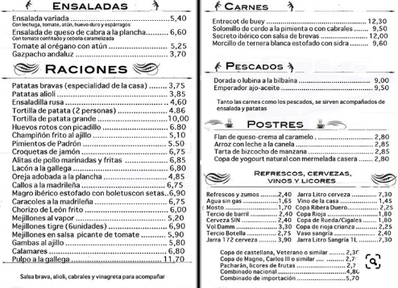

Menu
Informacion Especial
CANTINA CHICHILO DE BUENOS AIRES DESDE HACE 65 AÑOS AL SERVICIO DEL BUEN COMER ATENDIDOS POR SUS DUEÑOS EN UN BARRIO DE FAMOSOS "LA PATERNAL". ADEMAS LA PRODUCION DE POL-KA LA ELIGIO PARA LA APERTURA DE LA NOVELA ILUSIONES Y EL SODERO DE MI VIDA, ADEMAS ES EL LUGAR PREFERIDO DE DIEGO MARADONA.
Información de Contacto
CANTINA ITALIANA CHICHILO DE BUENOS AIRES
CAMARONES 1901 ESQUINA TERRERO 2006
(1416) CAPITAL FEDERAL - REPUBLICA ARGENTINA
TELEFONO-011-*4581-1984* *4584-1263
E-MAIL: chichilo3554@hotmail.com